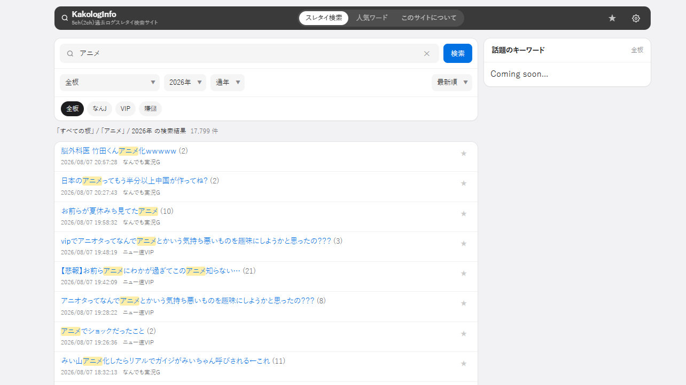
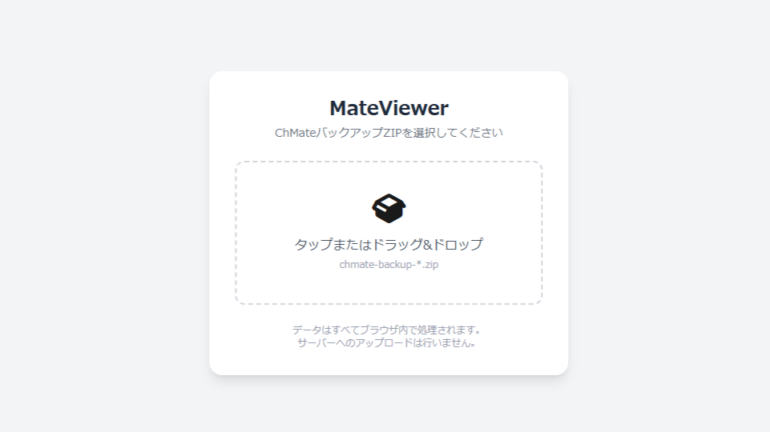

WORKS
制作物
-
KakologInfo

PythonスクリプトによるWebスクレイピングで小一ヶ月かけて取得した約1.3億件の5ちゃんねる（旧：2ちゃんねる）のスレタイを検索できるサイト。
DBの規模では自身が関わってきた中で最大だったので、バックエンド設計や技術選定などに時間を要しリリースまでが一苦労でした。 -
MateViewer

某Android用専ブラからエクスポートしたZIPファイルの過去ログデータをブラウザ上で閲覧できるWebアプリ。
元々はAndroidからiPhoneへの乗り換えをきっかけに、やはりchMateぐらい使い勝手の良いアプリが恋しいと思って衝動的に製作した。
リードした各スレッドデータの永続化に使用したIndexeddbが非常に優秀だという事がわかった。 -
アニソンCD売り上げデータ保管庫(復刻版)
かつて有志の方が公開していたアニソン専業歌手や声優アーティストのCD・DVD/BDなどの売上枚数が見れるブログを、Wayback Machineからの情報を基にDBサイト風にブラッシュアップしたもの。
さらなる利便性を求めて改良案を練ってます。 -
バンドリch.BBS 過去ログ倉庫
Wayback Machine上で記録されている閉鎖済の掲示板サイトのスレッド（トピック）をスクレイピングし、PythonスクリプトのBeautiful Soupなどでソースコードを整形させた上、当時のデザインを参考に可能な限り復元させた。
当時はバイブコーディングがまだ無かったのでChatGPTのフリープランで壁打ちしながら自力で試行錯誤しながらやりました。
このサイトはコロナ禍の時よく見てたのでほぼ自分用みたいなものとして作ったが、訳あってジャンル離れした為現在はほぼ見る事はない。 -
THE INTERVIEW+ / 百人一首の達人
いずれも高校時代に部活動の電算部で製作したもの。担当箇所のみ公開中。
PROFILE
プロフィール

- 名前
- Berusei / Kento Ikeda
- 出身
- 千葉県
- 関心
- Web開発、生成AI
- 趣味
- ゲーム、VR、音楽鑑賞、読書、創作
- スキル
- GitHub（別のタブで開きます）
- リンク
- Qiita
2022年12月からPHPを中心としたバックエンドエンジニアをやってます。
RESUME
経歴
-
2022.12 -
株式会社もばらぶ現職
バックエンドエンジニア
LaravelやCodeIgniterを用いたWebサービスの開発・運用に従事。
美容師向けの確定申告SaaSや、選挙情報・献金管理サイト、障害福祉サービス事業所の検索サイトなどといった複数のプロジェクトに携わる。
要件定義からリリース、テスト、レビューまでほぼ全工程をアジャイル開発で経験。
近頃はプロジェクト全体の方針により、生成AIも積極的に活用中。 -
2019.5 - 2022.11
登録型派遣社員 兼 家業従事
テクニカルサポートオペレーター / 社内SE / OA事務など
家業の経営状況の変化によりやむを得ず兼業しながら、派遣で社内SEやテクニカルサポートオペレーターに従事。不幸にもコロナ禍が直撃し、給付金や助成金に関する急務を担当する。
-
2017.4 - 2019.3
東京IT会計法律専門学校千葉校
ITビジネス学科
情報処理技術者能力認定試験、C言語検定、Java検定などを取得。卒業制作では、Javaを使用した飲食店在庫管理システムをチームで開発。
-
2015.10 - 2016.4
フリーター時代
書店店員 / テレフォンオペレーター
暗黒期。語られざる記憶。
-
2015.4 - 2015.9
日本工学院八王子専門学校
情報処理科
C言語やJavaなどの講義に参加。MOSを取得。同年9月に経済的事由により中退。
-
2012.4 - 2015.3
千葉県立一宮商業高等学校
情報処理科 / Visual Basic .NET
3年間、電算部のプログラマーとして活動。
一般のカリキュラムには含まれない高度な資格勉強に励み、ITパスポートに合格。東京情報大学や全国商業高等学校協会が主催するプログラミングコンテスト等へ応募する。
2年生の時は入試・就職の際の面接対策アプリが団体優良賞を受賞し、3年生の時は自身がサブリーダーを務めた百人一首のゲームアプリが惜しくも優秀賞（2位）を受賞した。当時の発表風景はこちら。
他にも、文化祭でCinema4Dを使用した動画制作や、「総合実践」の授業で町おこしのオリジナル番組制作をするなど、クリエイティブ方面でも幅広く活動した。 -
2011
人生初のWebサイト製作
ホームページビルダー
ねとらじで知り合った友人のJustin.tvやUstreamでの配信活動支援の為に、ライブ配信の埋め込み・視聴総合支援サイトを製作。HTMLやCSS、JavaScriptの基礎を学ぶ。
-
2010
初めて自分のパソコンを持つ
Windows7
当時中学2年生。Skypeやオンラインゲーム、ニコニコ生放送やUstreamの視聴などをきっかけに、より深くインターネットの世界に没頭する。
-
2006 - 2007
初めてパソコンに触れる
Windows XP / Windows Me
当時10歳。家族が購入したFMVのノートPCにて初めてパソコンに触れ、インターネットの世界へ飛び込む。その後、叔母の家にやってきたWindows MeのデスクトップPCを使い、YouTubeやニコニコ動画の視聴などを楽しむ。
-
1996
誕生
千葉県鴨川市内の病院にて生まれる。
職務経歴書をご希望の場合は、お気軽にお問い合わせください。
CONTACT
お問い合わせ
恐らくですがDiscordが一番早いです。XやVRChatでも受け付けてます。お気軽にどうぞ。